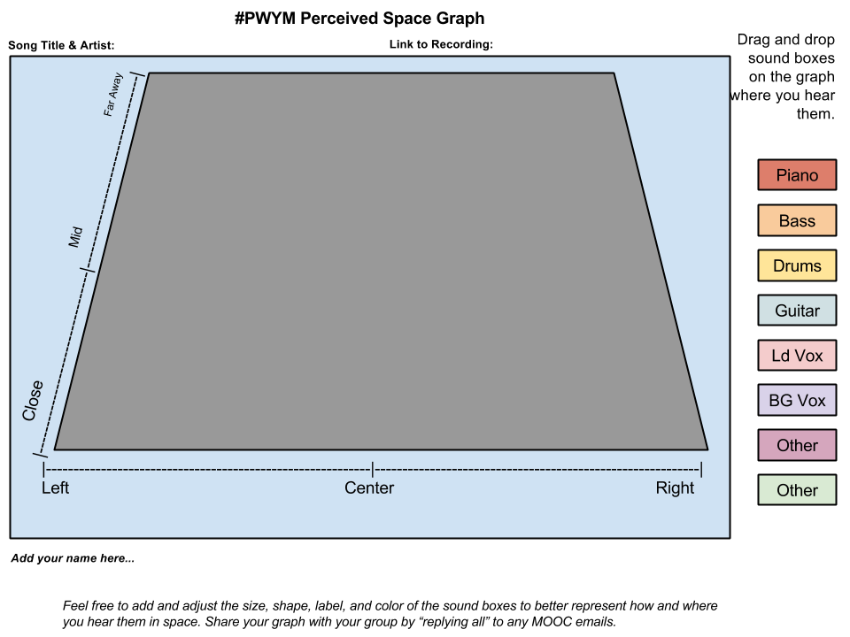

PROJECT 2: Analyze Your Favorite Tune and Share It
Apply the process that Ethan introduced you to in Project 1 [Linked post unavailable in this archive; opens the topic.] to one of your favorite tunes:
Listen to your tune several times all the way through, and write down each of the timbres you hear.

Open up a copy of our Perceived Space Graph Template [link withheld], and place your timbres as you hear them in your recording. Note: On many recordings, the placement of timbres in perceived space move as an expressive effect in different sections of a song. If this is the case in your chosen song, pick your favorite section and map the timbres in that section. If you are more experienced, feel free to create graphs for each section of the song.
For each timbre you hear in your recording, describe it as if you were explaining it to someone who had not heard the recorded sound of each timbre. This exercise helps you focus on using descriptive language beyond just the instrument/vocal label.
Write down why you chose this specific tune. What is it about this tune that makes you want to listen to it multiple times? Why is it important to you?
Paste a link to the specific recording you analyzed (if available online), copy the URL to your completed Perceived Space Graph Template, and share your analyses with your crew by
posting it to your Crew(s) over in the Meet category [link withheld] AND in the Module 2 Project Share topic in this category. We recommend you plan to do this within a few days so that you can get feedback from your Crew before we release Module 3 in early June. Image omitted from this public edition.
As you might have guessed, we encourage you to be creative in this course. If you find our Perceived Space Graph Template limiting, feel free to use your imagination and develop a different template than the one shared in Step 2, above. Some people prefer to work with pens, markers, and paper. For others, Google Charts is fine. If you decide to create multiple space graphs for your song, we encourage you to edit them into a video using iMovie or the free web-based Mozilla Popcorn Maker [link withheld] synchronizing your graphs to the recording. Whatever method you use, be sure to either share a link or take a photograph of it and post a photo of it to your learning ensemble.
Have fun! And, Learn Some More...
Listening to, analyzing, and sharing your music with others is fun stuff! But, you may be saying to yourself "I thought the name of the course was Play With Your Music?" To do just that (and to prepare a bit for the next module!) search for your favorite song (or upload an mp3) on The Infinite Jukebox [link withheld], powered by the folks over at The EchoNest [link withheld]. Learn from legendary music hacker and programmer Paul Lamere [link withheld] about why and how he created Infinite Jukebox [link withheld] and how you can “tune” Infinite Jukebox [link withheld] to literally Play With Your Music!